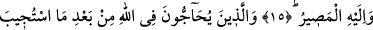
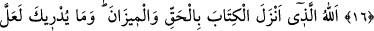
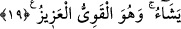

ONLARIN HEVESLERİNE UYMA
15. İşte onun için sen (tevhide) dâvet et ve emrolunduğun gibi dosdoğru ol.
Onların heveslerine uyma ve de ki: Ben Allah’ın indirdiği Kitab’a inandım ve
aranızda adâleti gerçekleştirmekle emrolundum. Allah bizim de Rabbimiz, sizin de
Rabbinizdir. Bizim işlediklerimiz bize, sizin işledikleriniz de sizedir. Aramızda
tartışılabilecek bir konu yoktur. Allah hepimizi bir araya toplar, dönüş de O’nadır.
16. Dâveti kabul edildikten sonra, Allah hakkında tartışmaya girenlerin delilleri,
Rableri katında boştur. Onlar için bir gazap, yine onlar için çetin bir azap vardır.
17. Kitab’ı ve mîzanı hak olarak indiren Allah’tır. Ne biliyorsun, belki de kıyâmet
saati yakındır!
18. Ona inanmayanlar, onun çabuk kopmasını isterler. İnananlar ise ondan
korkarlar ve onun gerçek olduğunu bilirler. İyi bilin ki, kıyâmet günü hakkında
tartışanlar derin bir sapıklık içindedirler.
19. Allah kullarına lutufkârdır, dilediğini rızıklandırır. O kuvvetlidir, güçlüdür.
“İşte onun için,” (bir önceki âyette bahsedildiği üzere) bu ayrılık ve kuşku verici
şüpheden yahut yarışanların kendisine uymak için yarışacağı bu kadîm, doğru ve
muhkem dînin onlara hukuk düzeni yapılmasından dolayı “sen” bütün insanları
“(tevhide)” bu dîni doğru tutmaya ve gereğiyle amel etmeye “dâvet et.” Zîrâ hem bu
ayrılık, hem onların kuşku veren bir şüphe içinde olmaları, hem de Peygamber (s.a.)’in
diliyle bu dînin onlara hukuk düzeni yapılması insanları bu dîne dâvet sebebidir. Böyle